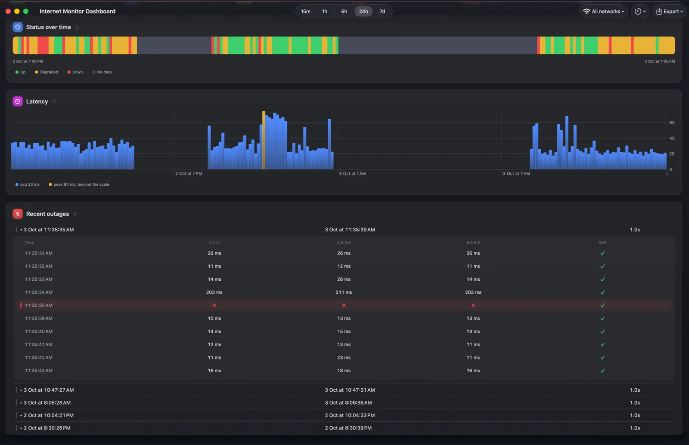

One-second outage detection
Catch the drops your ISP says never happened
Internet Monitor checks your connection every two seconds, down to every second if you like. A failed check is confirmed with an immediate retry, so even a one-second drop lands in your history as a fact, not a feeling.
Expand any outage to see exactly what failed: each probe target, each latency sample, and whether DNS was still answering.
